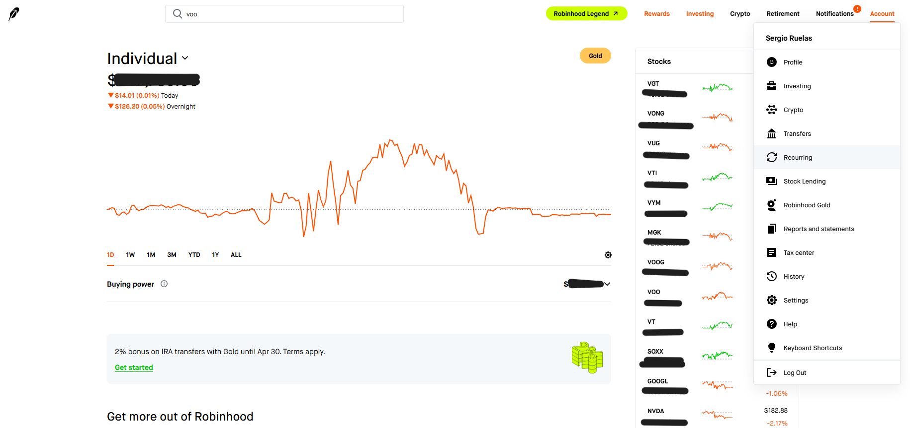
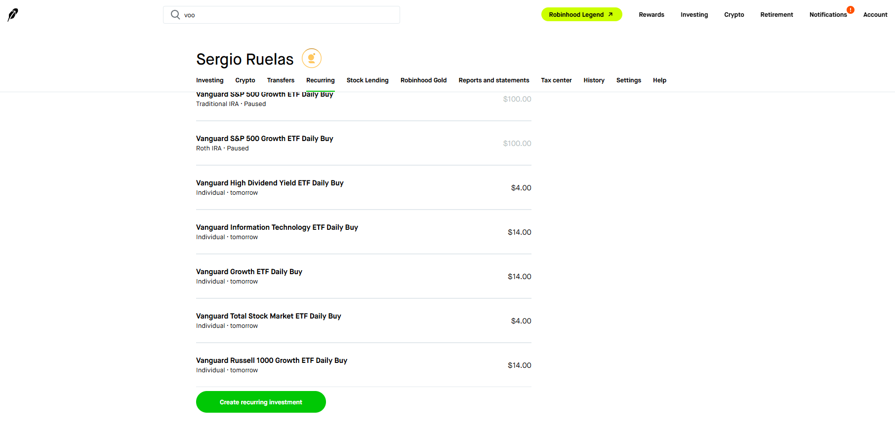
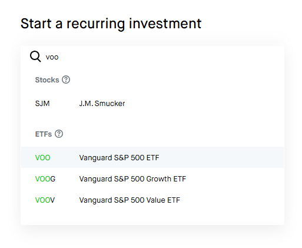
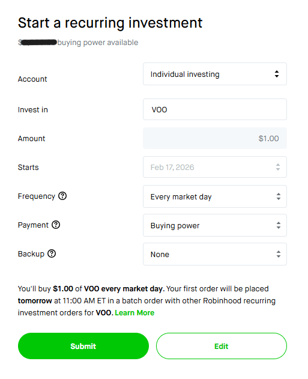

On this page you will walk through a step by step guide to setting up a recurring ETF investment on the Robinhood platform.
Create a recurring ETF investment on Robinhood
-
Open the Recurring investments menu
Log in to Robinhood and open your main investing screen. From the account menu, choose the Recurring option to see your current automatic investments and create new ones.

-
Click “Create recurring investment”
On the Recurring page you can see any existing recurring buys. At the bottom, click the green Create recurring investment button to start a new plan.

-
Search for your ETF (for example, VOO)
In the search box, type the ETF you want to use for your recurring investment. For this example, search for VOO, which is the Vanguard S&P 500 ETF, and select it from the ETF list.

-
Choose your amount, frequency, and submit
On the recurring investment screen, choose the account, confirm the ETF, and set the amount you want to invest each time. Then set the start date, frequency (for example, every market day or every week), payment source, and any backup funding.
When everything looks good, click Submit to create the recurring investment.
